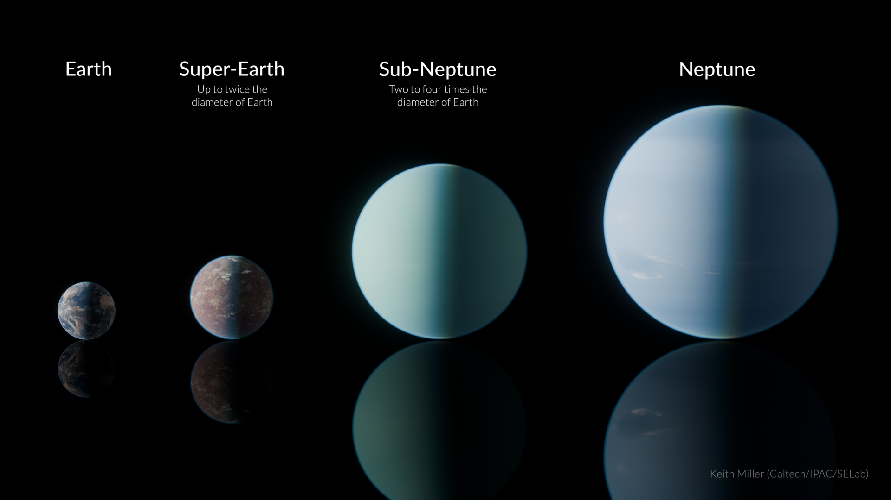

and sub-Neptune (middle right) compared to Earth and
Neptune. Super-Earths and sub-Neptunes are the most
common types of exoplanet.
Overview
Mini-Neptunes, sometimes called gas dwarfs, are exoplanets smaller than Neptune but large enough to hold onto a thick hydrogen and helium atmosphere over a rocky or icy core. They sit at the upper end of the size range that overlaps with super-Earths, and distinguishing the two often comes down to whether a thick gas envelope is present.
Formation
Mini-Neptunes are thought to form like larger gas giants, with a solid core accreting a gas envelope from the protoplanetary disk, but stop growing before pulling in enough gas to become a full ice giant. Their small size compared to Neptune or Uranus may reflect either less available gas nearby or a shorter window of time before the disk's gas dispersed.
Physical characteristics
Despite a modest overall size, a mini-Neptune's thick hydrogen envelope can make it appear significantly larger in radius than a rocky planet of similar mass, since gas is far less dense than rock. This makes radius alone an unreliable guide to composition, and mass measurements from radial velocity are usually needed to work out roughly how much of a mini-Neptune is gas rather than solid core.
Atmosphere
Mini-Neptune atmospheres are dominated by hydrogen and helium, often with clouds or haze that make it difficult for telescopes to see deeper into the atmosphere or detect the composition of the underlying core. Some, like GJ 1214 b, show almost featureless transmission spectra, a sign their atmosphere may be topped with a thick layer of haze or high clouds blocking the view.
Notable examples
GJ 1214 b was one of the first mini-Neptunes studied in detail, and remains a benchmark example of the type. K2-18 b, a mini-Neptune in its star's habitable zone, drew significant attention after observations of water vapour in its atmosphere and a disputed 2023 claim of a possible biosignature gas, a result that remains under active debate.
Detection
Mini-Neptunes are detected the same way as other exoplanets, mostly through transits, and turned out to be one of the most common planet sizes found by the Kepler mission, despite having no direct equivalent in the Solar System. Some scientists have proposed this gap in our own system, sometimes called the "radius valley", results from smaller mini-Neptunes losing their gas envelopes over time and becoming super-Earths instead.